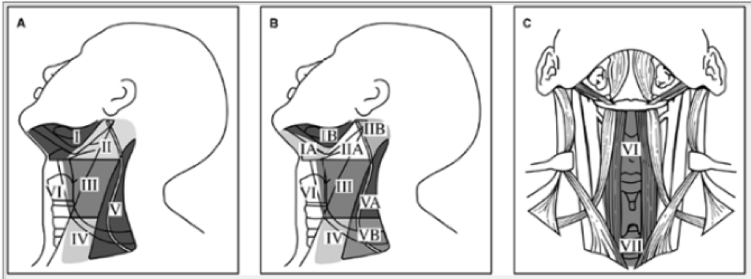
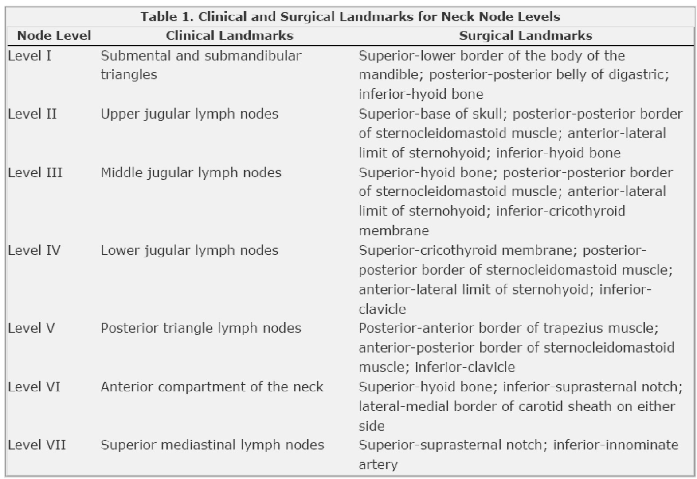
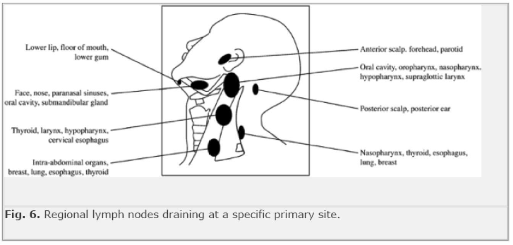

Anatomy
of Neck Dissections
1. Arranged
as a ring around the base of the head submental, submaxillary,
parotid, retroauricular, occipital
- these descend into vertical chains
--> superficial = external and anterior jugular; ie superficial
cervical and anterior cervical chains respectively.
- deeper chains lie along the trachea (paratracheal) and behind
the pharynx (retropharyngeal).
All these --> deep cervical nodes, around the internal jugular
vein.
--> these end in terminating nodes of all head neck lymph, and
give rise to teh right and left jugular lymphatic trunks -->
us. to thoracic duct on left or right lymphatic trunk on right.
Hence
the deep cervical nodes must be removed in head and neck
dissections.
2. What are the lymph node groups in neck dissection
6 levels and increasing toward the chest
II,III,IV associated
with IJV which is medical to posterior border of SCM and lateral
to the sternohyoid
• level I – submental and
submandibular
• submental nodes (in submental triangle)
• submandibular nodes (in submandibular triangle)
• includes submandibular gland
• from contralateral anterior belly of digastric to
ipsilateral posterior belly of digastric
• level II – upper jugular
• around upper third of
internal jugular vein
• from level of carotid
bifurcation or hyoid to base of skull
• lateral boundary posterior border of
sternocleidomastoid
• medial border lateral border of sternohyoid and
stylohyoid
• level III – middle jugular
• around middle third of
jugular
• upper level carotid bifurcation or hyoid
• lower level junction omohyoid with IJV or
cricothyroid
• lateral boundary posterior border of
sternocleidomastoid
• medial boundary lateral border of sternohyoid
• level IV – lower jugular
• around lower jugular
• upper border junction omohyoid with IJV or
cricothyroid
• lower border clavicle
• lateral border posterior border of
sternocleidomastoid
• medial border lateral border of sternohyoid
Page 388
• level V – posterior
triangle
• Superior: union of two muscles at occipital bone
• Medical: posterior border of sternocleidomastoid
• Lateral: anterior border of trapezius
• Inferior: clavicle
• nodes along spinal
accessory nerve
• nodes along transverse
cervical artery
• supraclavicular nodes, including the
infraclavicular Virchow’s node
• level VI – anterior triangle
• midline from hyoid superiorly to sternal notch
inferiorly


3. What are the types of neck dissection
• radical neck dissection
• all nodes I – V
• accessory nerve, IJV and sternocleidomastoid
sacrificed
• modified radical neck
dissection
• levels I – V
• one or more of accessory nerve, IJV and
sternocleidomastoid preserved
• selective neck dissection
• en-bloc removal of one or more lymph node groups at
risk for early lymph node metastases
• supraomohyoid selective
neck dissection
• levels I – III
• for ca of oral tongue or floor of mouth
• ± contralateral side
• add IV for tongue ca
• lateral selective neck
dissection
• levels II – IV
• for ca pharynx, hypopharynx and larynx
• usually bilateral
• posterolateral selective
neck dissection
• levels II – V
• for cutaneous malignancies and soft-tissue
sarcomas
• Anterior selective neck dissection
Terminology
Comprehensive
· The comprehensive
neck dissection removes all nodal tissue in the lateral
neck:Levels I-V. They are subclassified into rad and mod rad.
Generally indicated for the clinically positive neck N+.
· Radical – removal of lymph
nodes and sternocleidomastoid muscle,
internal jugular vein, spinal accessory nerve, and
submandibular salivary gland.
· Modified radical:
Preserving
any one of
— Type 1: Accessory nerve
— Type II: XI and SCM
— Type III: XI, SCM and IJV: generally used only
for metastatic differentiated thyroid carcinoma.
Extended radical:
Resecting
any of:
— Skin, external carotid
— XII
— Digastric
Selective
· Used for SCC of the
upper aerodigestive tract with clinically negative disease (N0),
where there is at least a 15% to 20% risk of occult metastatic
disease.
· Based on
metastasizes in a predictable and sequential pattern.
· SLND spares all
nonlymphatic tissue, including XI, SCM and IJV.
· Does not removal
all the lymphatic tissue on the involved side of the neck as
does a comprehensive neck dissection.
4. What are the likely primary sites for lymph node
metastases for the
different levels
• level I
• lip, oral cavity, skin
• level II
• oral cavity, oropharynx,
nasopharynx, hypopharynx, larynx
• level III
• oral cavity, oropharynx,
hypopharynx, larynx, thyroid
• level IV
• oropharynx, hypopharynx,
larynx, cervical oesophagus, thyroid
• level V
• accessory nerve chain –
nasopharynx, scalp
• supraclavicular – breast,
lung, GIT
• occipital – scalp
• lip → I
• oral cavity → I, II, III
• oropharynx → II, III, IV
• nasopharynx → II, V
• hypopharynx → II, III, IV
• larynx → II, III, IV
• thyroid → III, IV, VI
• cervical oesophagus → IV
Radical Neck Dissection
· Preparation
— Head drape
— Shoulder roll
— Neck extension
— Bipolar diathermy
— Nerve stimulator
ü If modified radical
or selective
— Patient N OT
paralysed þ
· Incision Hockey
along SCM to below platysma
· Flaps raised
— Subplatysmal
plane
Superior to
mandible
Anterior to mid
line
Posterior to
trapezius
· Posterior D
— Define anterior
border of trapezius
— Divide accessory
nerve
— Define superior
border of clavicle
— Identify &
divide inferior belly of omohyoid
— Identift &
divide posterior ends of transverse Cx vessels
— Sweep contents
lateral ® medial
— Expose Levator
scapulae, Scalenus posterior, scalenus medius & scalenus
anterior
— Identify &
preserve phrenic & brachial plexus
· Ligation of IJV
— Lower end SCM
divided
v ThyroCx trunk
underlyingclavicular head
— Lat border
sternohyoid defined & retracted medially
— Carotid sheath
opened
— X identified
& preserved
— IJV exposed,
ligated & divided
— Thoracic duct
identified ± ligated & divided
— Medial end
transverse Cx vessels ligated & divided
· Reflection of SCM
& posterior D contents
— Superior belly
omohyoid defined ® hyoid
Anteromedial
limit of dissection
— SCM, IJV &
lymphatics dissected superiorly off X & carotid
— Phrenic nerve
preserved
— Trunks of Cx
plexus divided
— Upper end SCM
divided
— Hypoglossal &
descendens hypoglossi identified crossing carotid
— Posterior belly
digastric defined
RMV divided
Tail of parotid
divided
— IJV divided
superiorly
Common Ops 4
· Anterior D
— Cx fascia along
mandible incised
— Facial artery
& retromandibular vein divided
— Tissue dissected
off anterior belly digastric
— Upper end of
omohyoid divided
— Submandibular
gland dissected out from under mylohyoid
— Lingual nerve
identified & preserved
Fibres to SM gland
divided
— Hypoglossal nerve
identified
— SM duct divided
— Facial artery
divided deep, after X’s stylohyoid
· Closure
— Suction drains
— S/c 2-0 vicryl to
platysma
— Staples to skin
What are the complications of neck dissection
• wound air leaks
• bleeding
• chyle fistula
• facial/cerebral oedema
(synchronous bilateral IJV ligation)
Page 389
• blindness
• carotid artery rupture
(exposed carotid or infection)
Factors important in prognosis of nodal disease
· Presence of
pathologically enlarged nodes, size, number and location (level
IV and V have worse prognosis), extra-capsular spread of
malignancy, perivascular and perineural infiltration.
Risk factors for nodal metastasis
· Site of the
primary: the more posteriorly located the greater the risk
increasing from lip to tongue to base of tongue and highest in
hypopharynx. The glottis has a low rate due to relative paucity
of lymphatics
· Size of the
primary (T stage)
· Exophytic
· Vascular or
perineural invasion
· Differentiation
depth of invasion
Primary site
Certain primary sites are classically involved
first with specific levels by neck metastasis
Oral cavity I-III
Oropharynx II-IV
Hypopharynx II-IV
Larynx I-IV
Nasopharynx: II-V
Lower lip, base of tongue, soft palate,
supraglottis have a high rate of bilateral mets
The incidence of level V mets is low in head and
neck SCC

Staging
TNM
v For metastatic
SCC
· N0 nil paplpable
· N1 Single
ipsilateral LNM £3cm
· N2
— a Single
ipsilateral LNM 3 - 6cm
— b Multiple
ipsilateral £ 6cm
— c Bilateral £6cm
· N3 ³6cm
Prognosis
· Recurrrence
predicted by:
— Number of LNM
— Extracapsular
spread
Survival
· N0 80% 5yrs
· N+ 40& 5yrs
· Extracaps spread
20% 5yrs
Indications
Therapeutic
· For N+ neck
· Selection of op
based on
— N status
— Fixation
— Situation of XI
— CT findings of
relational anatomy and deep structures
Selective
· N1 disease as
below:
Site
of 1° Level of LNM Levels dissected
Oral I I -IV
Lip I I – III
bilaterally
Laryngopharyngeal
II II - IV
Comprehensive
· Generally procedure
of choice for clinical metastatic neck disease
— Skin
— Salivary gland
— Thyroid
— Oropharyngeal
· Also for N+ neck
with unknown primary
— 63% 5yrs,
contralateral failure 16% McMahon ANZJS 2000
· Preserve XI, IJV,
SCM if possible
— XI functionally
most important
Adjuvant
XRT
· Consider for N1
— Extracapsular
spread
· Bilateral
recommended for N2 and N3
Elective
(or selective)
· N0 neck
SCC
Site
of 1° T stage Levels dissected
Oral cavity 2-4 I -
III
Oropharynx 1-4 II -
IV
Thyroid
· MTC
— N0 Bilateral
‘central’: III, IV and upper mediastinal
— N+ Unilateral
comprehensive, central on other side
Incisions
Selective
· Incision below
mandible
· Incision over SCM
to clavicle
Comprehensive
· Y shaped incision
· Horizontal
component from Level I to Level V
— lowest point £ 1/2 way down SCM
· lazy-S on vertical
limb to clavicle over SCM
· Trifurcation of
incision should be posterior to carotid artery in case of
breakdown
Operative
· See handout and
Mastery I p373